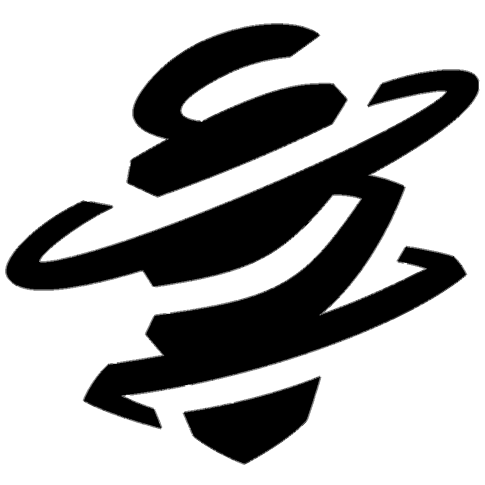
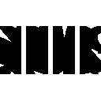

Sentinelle
Chamber
Aussi classe que bien équipé, le concepteur d'armes français Chamber repousse les assaillants avec une précision mortelle. Il met à profit son arsenal bien particulier pour tenir sa position et éliminer les ennemis de loin en prévoyant une solution aux défis posés par chaque stratégie.
COMPETENCES
- CHASSEUR DE TÊTES
- RENDEZ-VOUS
- MARQUE DEPOSEE
- TOUR DE FORCE
Activez pour équiper un gros calibre. Faites un tir secondaire avec le pistolet équipé pour utiliser le viseur.
ÉQUIPEZ-vous d'une balise de téléportation. TIREZ pour la poser sur le sol. Quand vous vous trouvez sur le sol à portée de la balise, RÉACTIVEZ pour vous y téléporter rapidement. La balise peut être ramassée pour être REDÉPLOYÉE.
Equipez-vous d'un piège qui détecte les ennemis. Tirez pour le poser sur le sol. Quand un ennemi visible est à portée, le piège déclenche un compte à rebours avant d'ébranler le terrain autour de lui, créant un champ persistant qui ralentit les joueurs qui s'y trouvent. La balise peut être ramassée pour être redéployée.
Activez pour matérialiser un puissant fusil de sniper personnalisé qui tue l'ennemi en un coup s'il est touché au-dessus de la ceinture. Utilisez le tir secondaire pour viser. Tuer un ennemi crée un champ persistant qui ralentit les joueurs qui s'y trouvent.
TIPS
- Lorsque Chamber peut se téléporter, vous pouvez obtenir l’information en observant la couleur de sa veste. En effet, celle-ci devient dorée lorsque l’Agent entre dans sa zone de téléportation
Cypher
Informateur originaire du Maroc, Cypher est un véritable réseau de surveillance à lui tout seul. Il révèle tous les secrets. Il détecte toutes les manœuvres. Rien n'échappe à Cypher.
COMPETENCES
- CYBERCAGE
- CAMÉRA ESPIONNE
- FIL DE DÉTENTE
- VOL NEURAL
Lancez instantanément la cybercage devant Cypher. Activez pour créer une zone qui bloque la vision et qui ralentit les ennemis qui la traversent.
Equipez-vous d'une caméra espionne. Tirez pour placer la caméra espionne à l'endroit ciblé. Réutilisez cette compétence pour prendre le contrôle de la caméra. Quand vous contrôlez la caméra, tirez pour envoyer une fléchette de marquage. Cette fléchette révélera la position de tout joueur qu'elle a touché. La balise peut être ramassée pour être redéployée.
Equipez-vous d'un fil de détente. Tirez pour placer un fil de détente dissimulé et destructible, créant une ligne qui va du point de placement au mur opposé. Les joueurs ennemis qui franchissent le fil de détente seront attachés, révélés et désorientés après un court instant s'ils ne détruisent pas le dispositif dans les temps. Le fil peut être ramassé pour être redéployé.
Utilisez cette compétence instantanément sur un cadavre ennemi pour révéler la position de tous les joueurs ennemis en vie.
TIPS
- Il n’existe plus aucune période de temps (7s) limitant l’utilisation de Vol Neural sur un corps. Attendez donc le meilleur moment pour l’utiliser.
- Le Fil de Détente peut être posé aussi bien sur les sols, plafonds et surfaces irrégulières que sur les murs. Soyez créatifs.
- Les adversaires qui déclenchent le Fil de Détente ont quelques secondes pour détruire son dispositif s’ils veulent empêcher son ralentissement.
- Il est possible de récupérer les Cages de Cypher durant la phase d’achat, mais ce n’est plus le cas lorsque le tour a commencé.
Killjoy
Véritable génie originaire d'Allemagne, Killjoy sécurise et défend les positions clés sans effort grâce à son arsenal d'inventions. Si son équipement ne suffit pas à arrêter l'ennemi, ce sont les entraves de ses robots qui en feront du menu fretin.
COMPETENCES
- BOT-ALARME
- TOURELLE
- ESSAIM DE NANITES
- CONFINEMENT
ÉQUIPEZ-vous d'un robot d'alarme camouflé. TIREZ pour déployer un robot qui traque les ennemis à sa portée. Quand il atteint sa cible, le robot explose, infligeant l'altération d'état Vulnérable. MAINTENEZ LA TOUCHE D'ÉQUIPEMENT pour rappeler un robot déployé.
Equipez-vous d'une tourelle. Tirez pour déployer une tourelle qui tire sur les ennemis dans un cône de 180 degrés. Maintenez la touche d'équipement pour rappeler la tourelle déployée.
Equipez-vous d'une grenade à essaim de nanites. Tirez pour lancer la grenade. À l'atterrissage, la grenade se camoufle. Activez la grenade pour déployer un essaim de nanites.
Equipez-vous d'un dispositif de confinement. Tirez pour déployer le dispositif. Après un long délai d'activation, le dispositif retient tous les ennemis pris dans sa zone d'effet. Le dispositif peut être détruit par les ennemis
TIPS
- Il faut un moment pour équiper et déployer les gadgets de Killjoy et plus longtemps encore avant qu’ils ne soient activés et prêts au combat.
- Vous pouvez ranger votre tourelle pour la redéployer ensuite si elle est la cible de compétences, comme la Grenade Gigogne de Raze.
- Lorsque Killjoy est trop éloignée de son matériel, celui-ci se désactive automatiquement. Ce point donne deux informations importantes selon la situation rencontrée : soit Killjoy est à proximité, soit elle ne l’est pas.
Deadlock
Deadlock, l'agent spécial norvégien, déploie un éventail de nanocâbles ultra-modernes pour défendre sa position contre le plus violent des assauts. Nul n'échappe à sa vigilance, ni ne survit à sa cruelle ténacité.
COMPETENCES
- RADAR ULTRASON
- DISQUE BARRIÈRE
- GRAVNET
- ANNIHILATION 
Equipez-vous du Radar ultrason. Tirez pour le déployer. Le radar détecte tous les sons générés par l'ennemi dans une zone. Il étourdit dans cette zone dès qu'il repère des bruits de pas, de tir ou tout autre son remarquable.
Equipez-vous du disque barrière. Tirez pour le lancer vers l'avant. À l'atterrissage, le disque déploie à partir du point d'origine une barrière bloquant l'avancée des agents.
Equipez-vous d'une grenade GravNet. Tirez pour la lancer. Utilisez le tir secondaire pour la lancer par en dessous. La GravNet explose à l'atterrissage, forçant tous les ennemis à portée à se baisser ou se déplacer au ralenti.
Equipez-vous de l'Accélérateur de nanocâbles. Tirez pour envoyer une salve de nanocâbles qui captureront le premier ennemi touché. L'ennemi ainsi emmailloté sera attiré en ligne droite, au bout de laquelle il mourra, à moins d'être libéré. Le cocon de nanocâbles est destructible.
TIPS
- Le clone de Yoru peut être pris dans l’ultime et servir de bait.
- Wingman est ralenti par le GravNet.
- Le cocon de l’Ultime peut traverser les murs de Filet de Contention.
- Si le porteur du Spike est pris dans le cocon, le Spike est inaccessible autant de temps qu’il reste prisonnier.
Sage
Véritable pilier originaire de Chine, Sage assure sa sécurité et celle de son équipe où qu'elle aille. Elle peut réanimer ses alliés tombés au combat et repousser les assauts ennemis pour offrir des oasis de tranquillité sur un champ de bataille infernal.
COMPETENCES
- ORBE DE LENTEUR
- ORBE DE SOIN
- ORBE BARRIÈRE 
- RÉSURRECTION
Equipez-vous d'un orbe ralentissant. Tirez pour lancer l'orbe devant vous. Lorsqu'il touche le sol, l'orbe explose et crée un champ persistant qui ralentit les joueurs qui s'y trouvent.
Equipez-vous d'un orbe de soin. Tirez en visant un allié blessé pour lui rendre des PV sur la durée. Si vous avez subi des dégâts, utilisez le tir secondaire pour récupérer des PV sur la durée.
Equipez-vous d'un orbe barrière. Tire permet de placer un mur solide. Le tir secondaire fait pivoter le cibleur.
Equipez-vous d'une compétence de résurrection. Tirez en visant un allié mort pour le ramener à la vie. Après une courte canalisation, votre allié est ramené à la vie avec tous ses PV.
TIPS
- Les effets de l’Orbe de Ralentissement ne peuvent être cumulés. Si vous jetez une orbe sous un ennemi déjà ralenti, il n’en subira pas les effets, même si le premier ralentissement s’est dissipé.